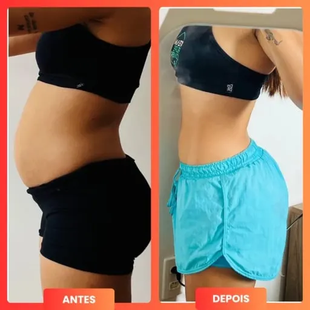

Descubra como secar a barriga e afinar a cintura enquanto define coxas e bumbum em até 4 semanas
Com treinos rápidos, na academia ou em casa, e uma alimentação saborosa. Sem dieta restritiva e sem 1.000 abdominais.
★★★★★Mais de 12.000 transformações com o Desafio
Feito para você que:
Se sente falsa magra e não vê definição
Faz abdominal e a barriga continua ali
Ganha peso rápido e demora pra perder
Já fez muito cardio e comeu pouco
